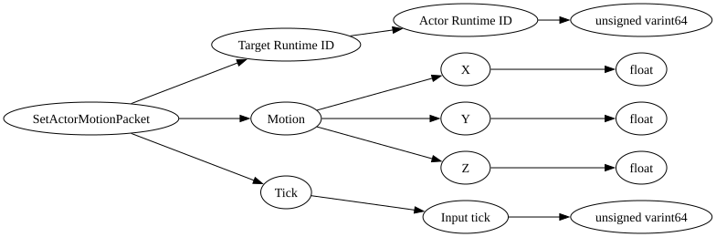

| Purpose: | This is used for the server to set the velocity of a client actor. |
| Notes: |
It is primarily relevant for client predicted entities like the player or a boat or horse they are in control of.
For most other actor types it does nothing. This is one of the packets that can directly affect player motion, for others, see: - MovePlayerPacket - CorrectPlayerMovePredictionPacket |

| Field Name | Field Type | Field Constraints | Field Notes |
|---|---|---|---|
| Target Runtime ID | ActorRuntimeID | ||
| Motion | Vec3 | ||
| Tick | PlayerInputTick | If this packet is referring to the player or a client predicted vehicle they are in control of, this should be the most recently processed PlayerInputTick from their PlayerAuthInputPacket. Otherwise zero. |